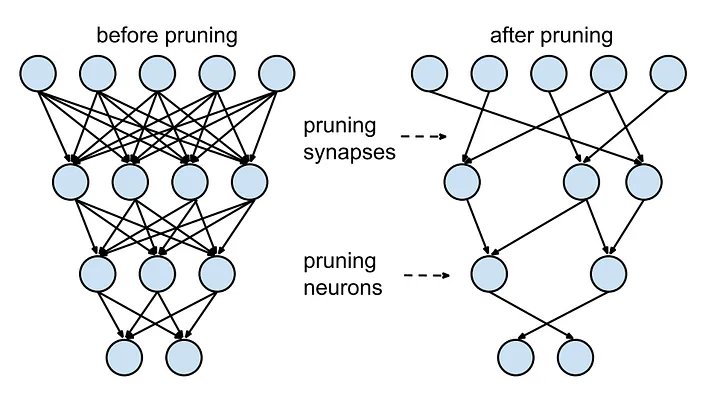
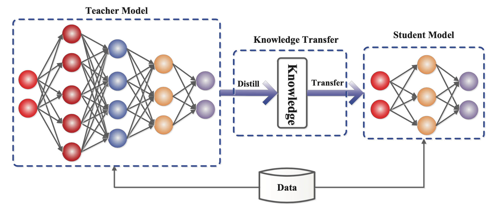

5. Edge deployments
Machine Learning Operations
HOGENT applied
computer science
Thomas Aelbrecht & Martijn Saelens
2023-2024
Learning goals
- Get familiar with the TensorFlow Lite framework
- Convert a TensorFlow model to a TensorFlow Lite model with
quantization
- Train a quantize aware model
- Perform weight pruning on a model
Running models on edge devices
What is edge computing?
- Bring computers close to
- Process data locally, instead of sending it to the cloud
Why edge computing?
- Faster and more reliable
- Lower latency
- No connection to the Internet needed
- Privacy
- …
Edge computing in ML
- Run ML models on edge devices, e.g.
- smartphones
- Raspberry Pi
- NVIDIA Jetson
- …
Challenges
- Everything is limited:
- resources
- power
- storage
- bandwidth
- …
Think about model size and resource needs
Model compression
Some techniques:
- Dimensionality reduction
- Quantization
- Pruning
- Knowledge distillation
Dimensionality reduction
- Reduce the number of features
- Examples:
- Principal Component Analysis (PCA)
- Singular Value Decomposition (SVD)
- Linear Discriminant Analysis (LDA)
- …
Quantization
- Reduce the number of bits used to represent a number
- i.e. represent weights and activations with fewer bits
- e.g. 8-bit int instead of 32-bit float
- Can be done during training or after training
Pruning
- Remove irrelevant weights
- i.e. remove weights that are close to zero
- Usually done after training
- Followed by retraining to reduce accuracy loss
- Can also be done during training
Pruning

Pruning (Souvik, 2020)
Knowledge distillation
- Train a smaller model to mimic the behaviour of a larger model
- Student model learns from teacher model
Knowledge distillation

Knowledge distillation (Teki,
2023)
What is TensorFlow Lite?
- Framework for deploying ML models on mobile and IoT devices
- Optimized for on-device inference
- Supports Android, iOS, Linux and microcontrollers
https://www.tensorflow.org/lite/guide
TensorFlow Lite models
- Different from TensorFlow models
- Optimized for on-device inference
- Smaller and faster
- Can be converted from TensorFlow models
Get started with the lab assignment!
Quantization and pruning
- Use Google Colab to run
ml-workflow/quantization-and-pruning.ipynb
- Convert a TF model into a TF Lite model with quantization
- Train a quantize aware model
- Perform weight pruning on a model